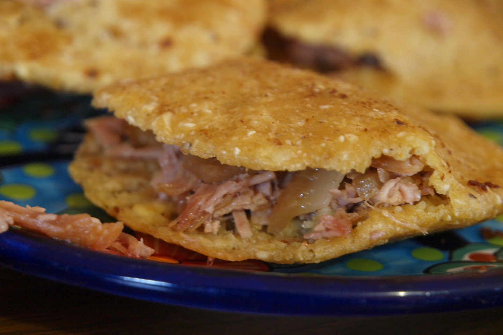

GORDITAS DE CARNITAS DE DOLORES

SI UN PLATILLO ES POPULAR EN TODO MÉXICO, SIN LUGAR A DUDA SON LAS «GORDITAS», PUES CADA ESTADO DE LA REPÚBLICA TIENE SU MUY PARTICULAR ESTILO DE PREPARARLAS, YA SEA FRITAS, AL COMAL, CON RELLENO, SIN RELLENO Y DOLORES HIDALGO TAMBIÉN TIENE SU ESTILO, NO MENOS SABROSO QUE LAS DEMÁS.
SU PREPARACIÓN NO ES MUY DIFERENTE A LAS QUE PREPARAN EN OTRAS PARTES. SON TORTILLAS DE MASA DE MAÍZ UN POCO GRUESAS Y MÁS PEQUEÑAS QUE LAS NORMALES. SON FRITAS EN ACEITE O, MEJOR AÚN, EN MANTECA. ESTÁN RELLENAS DE CARNITAS DE CERDO ACOMPAÑADAS POR UNA DELICIOSA SALSA ROJA O VERDE.